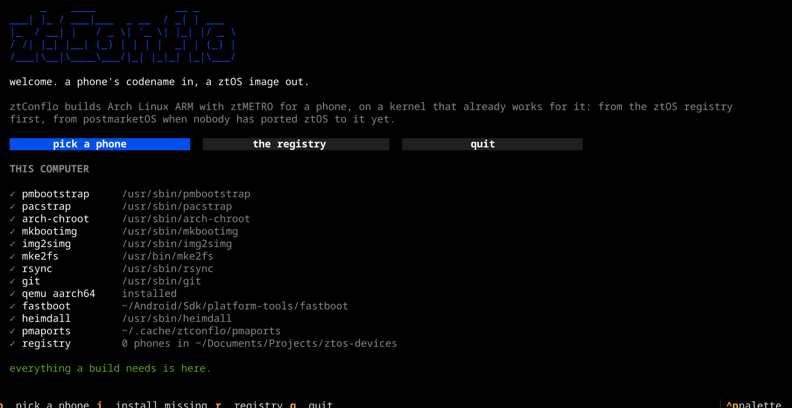
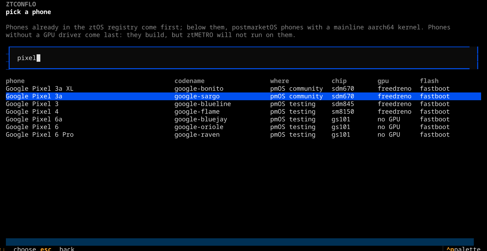
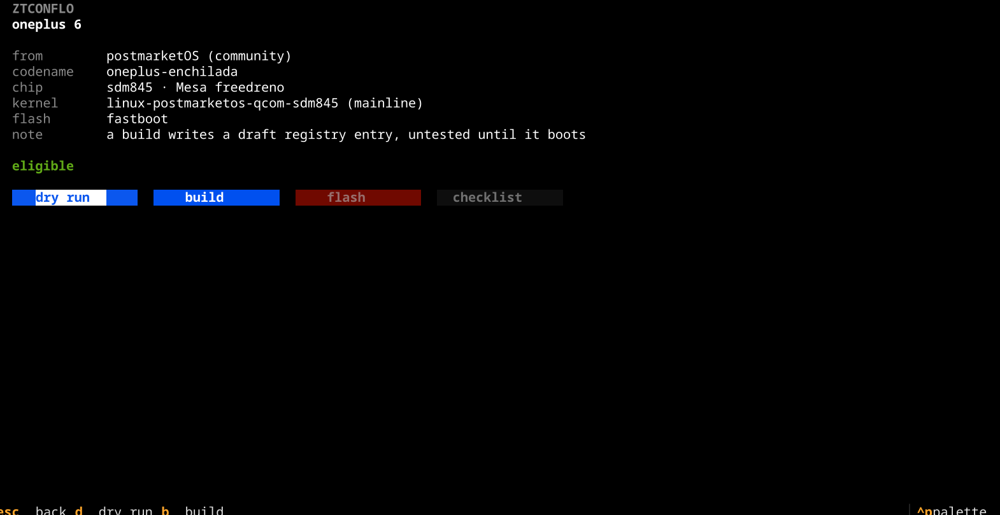
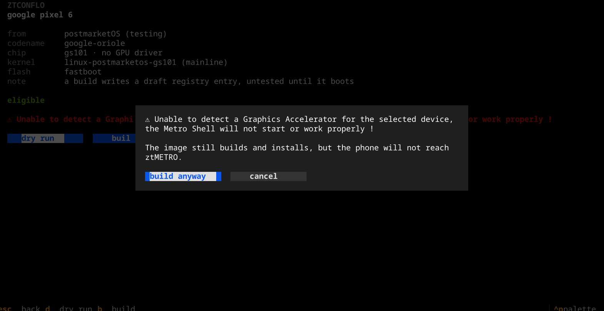
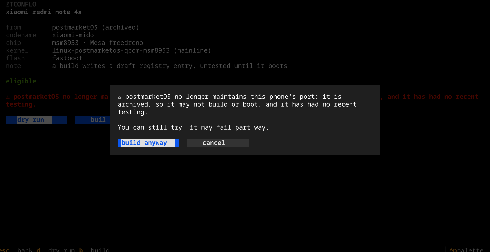
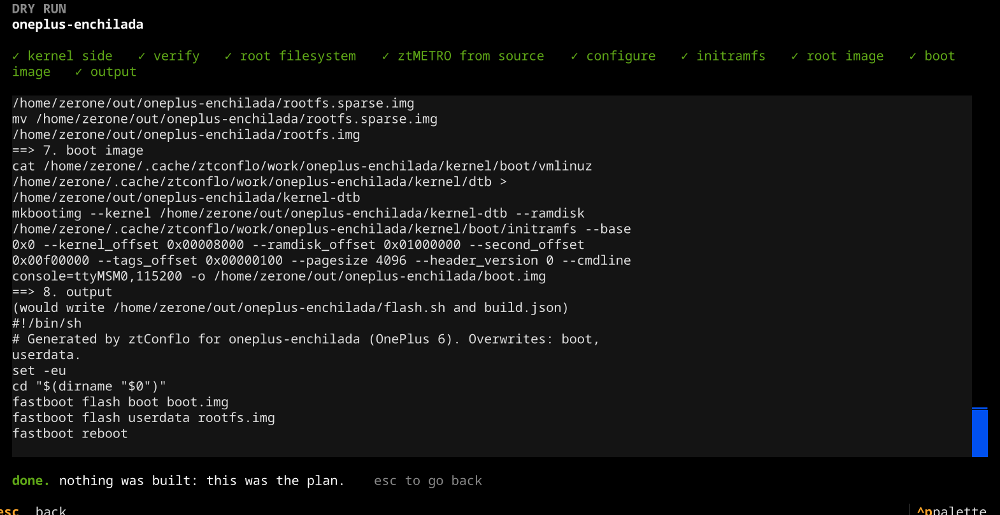

ztOS / tools
ztConflo
ztConflo builds Arch Linux ARM with the ztMETRO shell for a phone, on a kernel and boot setup that already works for it. It looks in the ztOS device registry first, and falls back to postmarketOS for phones nobody has ported ztOS to yet.
It reuses what already boots: postmarketOS's kernels, firmware, initramfs and boot settings. It never ports new hardware. Every build is pinned to exact commits and checksums, and every fallback build leaves a draft registry entry behind, so the registry grows from real boots.
Screenshots
The terminal UI, on a real pmaports checkout.












Getting started
From a fresh clone to a dry run.
ztConflo runs on an x86_64 Arch-based computer: Arch, CachyOS, EndeavourOS or Manjaro. Python 3.12 or later is all it needs to start.
git clone https://github.com/Zerone-Laboratories/ztconflo
cd ztconflo
python -m ztconflo # opens the terminal UI
The first run
The first time it starts, ztConflo checks the computer for what a build needs and installs anything missing with a single sudo pacman -S --needed. It asks for your password once. Every tool comes from Arch's own repositories:
| Package | What it is for |
|---|---|
| pmbootstrap | Builds the kernel side from postmarketOS |
| arch-install-scripts | pacstrap and arch-chroot for the root filesystem |
| android-tools | mkbootimg, img2simg and fastboot |
| e2fsprogs | mke2fs for rootfs.img |
| qemu-user-static-binfmt | Runs aarch64 programs on the x86_64 host |
| heimdall | Flashing Samsung phones |
| rsync, git | Copying sources and fetching pmaports |
| python-textual | The terminal UI |
Run ztconflo setup to check or install again later. On a system that isn't Arch-based, it prints the package list instead of installing.
A first look
ztconflo candidates # phones you could build for ztconflo lookup oneplus-enchilada # where one comes from, and why ztconflo build oneplus-enchilada --dry-run # every command, nothing run
The terminal UI
What plain ztconflo opens.
The TUI is built with Textual and drawn in ztOS's own Metro look: black, one blue accent, lowercase headings. It runs the same code as the command line and only shows it.
- Welcome
- A greeting and a check of this computer: each tool found, missing, or only needed for some phones.
- Pick a phone
- A fuzzy-searchable table: type roughly what you remember, arrow keys to choose, enter to open. Registry phones first, then eligible postmarketOS phones with their chip and GPU driver.
- A phone's page
- Where it comes from, its chip, kernel and flash method, and dry run, build, flash and checklist buttons.
- Build
- The steps ticked off as they run, with every command's output streamed live below.
- Flash
- The partitions it will overwrite, and a box where you type the codename before anything is written.
- Checklist
- The hardware checks, with the manual questions asked as yes or no dialogs.
Keys: p pick a phone, i install what's missing, d dry run, b build, esc back, q quit. In the phone list, just type to search. The search is fuzzy: typos, missing letters, word order and abbreviations are fine (op6, pixl and xiomi mido all find their phone), and the best match comes first. ↑ and ↓ choose a phone and enter opens it. esc clears the search first, then goes back. A real build asks for sudo once, in the plain terminal, and keeps it alive until it finishes.
Commands
One program, eight subcommands.
| Command | What it does |
|---|---|
| lookup <codename> | Resolves the phone and prints where it came from, its status and eligibility. Builds nothing. |
| build <codename> | Resolves, then runs the whole pipeline into out/<codename>/. |
| flash <codename> | Shows the target partitions, asks for the codename, then runs flash.sh. |
| promote <codename> | Runs the hardware checklist on a connected phone and opens a pull request with the result. |
| refresh <codename> | Re-reads pmaports at a newer commit and shows a diff of [boot] and [source.pmos] before writing. |
| list | Lists registry entries, filtered with --status and --origin. |
| candidates | Lists eligible postmarketOS phones that have no registry entry yet. |
| setup | Checks this computer and installs what a build needs. |
Every command takes --registry <path or git url>, --pmaports <path>, --jobs N and --dry-run, before or after the subcommand. A phone can be named by its short codename too: enchilada finds oneplus-enchilada when only one phone matches.
Finding a phone
The registry always wins.
ztConflo reads pmaports as text. It never sources a deviceinfo or APKBUILD file, so a pmaports checkout is never run as code on the host. Boot settings come from deviceinfo, and the kernel command line from kernel-cmdline.conf. The kernel package comes from the device package's dependencies, or from its kernel-* subpackages on phones with more than one kernel.
Eligibility
A pmaports phone is eligible when every one of these holds. ztconflo lookup names the rule that failed, and whether the phone is a dead end.
| Rule | Why |
|---|---|
Category is main, community, testing or archived | downstream ports use vendor kernels, so they are rejected. archived ports are no longer maintained, but many still use a mainline kernel: they are eligible, with a warning. |
Architecture is aarch64 | 32-bit armv7 phones are out of scope for version 1. |
| The kernel is mainline | A vendor kernel has no Mesa GPU driver, so ztMETRO can't draw on it. |
Today's pmaports has 135 eligible phones and tablets that ztConflo can flash. 64 are maintained by postmarketOS, led by Snapdragon phones such as the OnePlus 6 and 6T, the Pixel 3a, the Poco F1 and the Fairphone 4. The other 71 are archived ports, such as the Redmi Note 4X, the Mi A1 and the OnePlus 3 and 5.
GPU acceleration
ztMETRO draws everything with OpenGL ES, so it needs a GPU that Mesa drives. ztConflo reads the system on a chip from the device tree name and looks it up in a small table: freedreno for Qualcomm Adreno, panfrost and panthor for Mali, lima for older Mali, etnaviv for Vivante.
A phone without a known GPU driver is still built and flashed, but ztConflo warns at every step: lookup, candidates, build, flash and in the TUI, which also asks before building.
20 of the 135 eligible phones are in this group, the Pixel 6 among them.
Archived ports
postmarketOS archives a port when no one maintains or tests it any more. That says nothing about the kernel: 71 archived phones still use a mainline one, so ztConflo lists them last, builds them, and warns first, in the same places as the GPU warning:
Archived phones with a vendor kernel, such as the Galaxy S9 (Exynos), are still rejected. That is where the downstream kernel rule bites. The Snapdragon S9, samsung-starqltechn, is a maintained port and is eligible.
The device registry
Everything ztConflo knows about a phone.
The registry is its own repository, ztos-devices. Each phone is a folder, devices/<codename>/, holding device.toml and, if needed, an overlay/ of files copied into the root filesystem and a packages.txt of extra Arch packages. There is no per-phone code in ztConflo itself.
Status only moves forward, and only through ztconflo promote, which opens a pull request rather than pushing to the main branch.
[device] codename = "oneplus-enchilada" name = "OnePlus 6" arch = "aarch64" status = "untested" # untested | boots | tested origin = "pmos" # pmos | native [source.pmos] pmaports_commit = "<sha>" kernel_pkg = "linux-postmarketos-qcom-sdm845" firmware_pkgs = ["firmware-oneplus-sdm845"] category = "community" [kernel] mainline = true artifacts_sha256 = "<one hash over kernel, modules and dtb>" soc = "sdm845" gpu_driver = "freedreno" [boot] # frozen from deviceinfo flash_method = "fastboot" pagesize = 4096 dtb = "qcom/sdm845-oneplus-enchilada" cmdline = "console=ttyMSM0,115200" append_dtb = true rootfs_target = "userdata"
The [boot] table is a frozen copy: later pmaports changes never alter it. Only ztconflo refresh changes it, after showing a diff. Fields that pmaports left to mkbootimg's defaults are listed under defaulted, so a person can check them.
The build pipeline
Eight steps into out/<codename>/.
The build runs on an x86_64 Arch host and cross-builds through QEMU user emulation. With --dry-run it prints every command and changes nothing.
- Kernel sidepmaports checked out at the entry's commit;
pmbootstrapbuilds the kernel and firmware, and its install step makes the initramfs. The.apkfiles are unpacked with tar. - VerifyOne sha256 over the kernel, modules and dtb. A mismatch stops a
testedphone; an untested one has the hash written in. - Root filesystem
pacstrapbootstraps Arch Linux ARM with its own keyring, then the kernel's modules and firmware are copied in. - ztMETRO from sourceztMETRO, the SDK and the system apps are compiled from a ztOSMobile checkout inside the new root, under QEMU.
- ConfigureHostname
ztos-<codename>, the default user, the phone's daemons,/etc/ztmetro/config, and ztMETRO as the greetd session. - InitramfspostmarketOS's, reused unchanged. It is busybox and shell, so musl or glibc doesn't matter.
- Root imageAn ext4 image labelled
pmOS_root, so that initramfs finds it, made sparse for fastboot. - Boot image
mkbootimgwith every[boot]field, the dtb appended when the phone needs it. Thenflash.shandbuild.json, which records every input hash and commit.
Flashing
Never automatic.
flash.sh is generated from the phone's flash method. ztconflo flash runs it only after showing every partition it will overwrite and having you type the codename, because it erases userdata.
| Method | What it writes |
|---|---|
| fastboot | boot.img to boot, rootfs.img to userdata, then reboots. |
| heimdall-bootimg | boot.img and rootfs.img to the Samsung partitions named in [boot]. |
| heimdall-isorec | Kernel, initramfs and root image as three separate partitions. |
Hardware checklist
How a phone earns its status.
ztconflo promote connects to the phone over SSH on USB networking and runs ten checks. Automatic ones run on their own; for the rest, the person holding the phone says yes or no.
| Check | How | Needed for |
|---|---|---|
| Boots to ztMETRO | Automatic: the shell is running and has shown Start | boots |
| Display | Automatic: a connected output with a mode | boots |
| Touch | Manual: three targets tapped on screen | boots |
| GPU renderer | Automatic: the renderer isn't llvmpipe | tested |
| Wi-Fi | Automatic: a scan finds networks | tested |
| Vibrator | Automatic and manual: a force-feedback device, and a buzz felt | tested |
| Audio | Manual: a test tone heard | tested |
| Battery | Automatic: a capacity reported | tested |
| Suspend and resume | Manual: the screen and touch come back | tested |
| Modem | Automatic: ModemManager sees one. Recorded, never blocking | tested |
Exit codes
For scripts that call ztConflo.
| Code | Meaning |
|---|---|
| 0 | Success |
| 1 | Not found in the registry or pmaports |
| 2 | Found but not eligible: a downstream (vendor) kernel, a downstream port or a 32-bit phone |
| 3 | Build failed |
| 4 | Hash mismatch on a tested entry |
| 5 | Checklist failed during promote |
Status and limits
Where ztConflo is today.
boots.
- The initramfs is postmarketOS's. That is why the root image must be labelled
pmOS_root; mkinitcpio hooks replace it in a later version. - ztMETRO is compiled from source during each build, until a ztOS pacman repository exists. Phones with
origin = "native"wait on that repository too. - Only fastboot and heimdall phones can be flashed.
mtkclient,rkdeveloptooland the rest are not supported yet. - Building the root filesystem needs
sudo, forpacstrapandarch-chroot.
What's next
- A first fastboot phone built and booted end to end, with its entry reaching
boots. - Heimdall phones, so older Samsungs work.
- mkinitcpio in place of the postmarketOS initramfs.
- Native kernel packages in a ztOS pacman repository for phones that reach
tested.
See also
- ztConflo source, with the full specification
- ztos-devices, the device registry
- ztOS, the phone operating system ztConflo is part of
- postmarketOS, whose kernels and boot knowledge ztConflo reuses
- Ometh Abeyrathne, who makes it